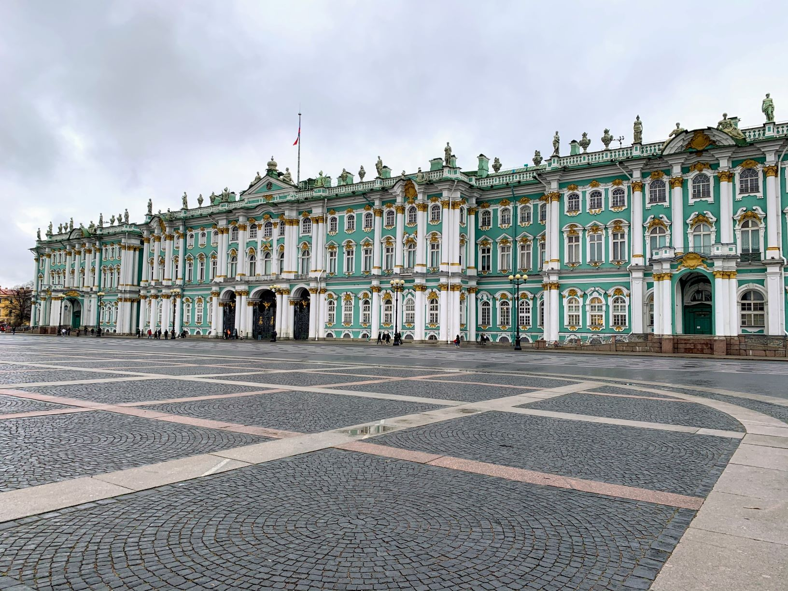
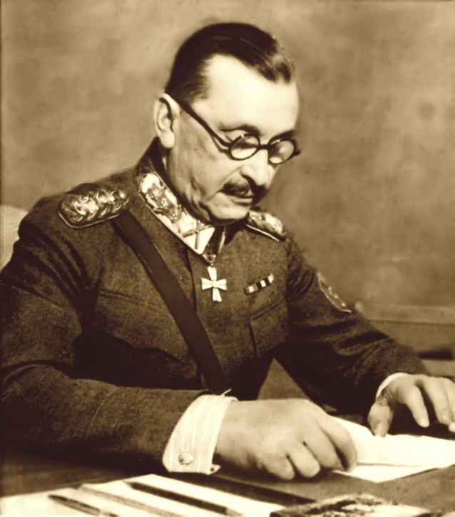

Introduction to Mannerheim
You may never have heard of Mannerheim. But, if you wish to learn Finland's history it would be nigh impossible to neglect him. He fought in many different wars and is claimed to have single-handedly changed the course of Finnish history in quite the significant way.
That's why this article is meant to introduce you to Carl Gustaf Emil Mannerheim. Through learning about his eventful life, you may gain more understanding of Finland's modern history. Let us go over some milestones of Mannerheim, and try to understand him from a personal and a contextual point of view.
Early Life
Mannerheim was born in 1867, at a time that Finland was still a part of Russia. The 'Whites' were not fighting the Reds yet and the seat of power seemed rather stable at the time: Tsars ruled over the vast land that stretched from Alaska to modern Poland. That is why Mannerheim truly felt part of the Russian state - even though he was a Finnish-born man. But, more on that later.
Because of his Russian citizenship, Carl Mannerheim joined the Imperial Russian army around the age of 14. At 193 centimeters tall, he was soon drafted as an Imperial guard at the Romanov's Winter Palace in Saint Petersburg.

The Winter Palace was used by Tsars from 1732 up until 1917 and can still be visited today. The world-famous hermitage museum is situated at the precincts of this royal residence
Warfare & Ventures
In 1904, the Russo-Japanese War broke out. Many historians say that it preluded the gruesomeness that people would witness in World War I. By the turn of the 20th century, weapons had become so effective, destructive and gruesome that all parties sought shelter by digging trenches.
However, as part of the 52nd Nezhin Dragoon Regiment (Cavalry), Mannerheim did not fight in trenches like some infantry would. He had volunteered for this service and excelled in terms of bravery at the battle of Mukden in 1905. Because of these actions and his resumé Mannerheim received a promotion: from Lieutenant-Colonel to Colonel.
Secret Intelligence Officer
Having proved himself in warfare, Mannerheim was taksed with commanding units of local militia. He was able to disicpline them and took on exploratory missions into Inner Mongolia.
Having showcased his ability to command, Mannerheim was invited to become a secret agent of sorts. He was tasked with becoming a clandestine intelligence officer on an academic journey from Turkestan to Beijing. While disguising himself as an Ethnographer, he considered how feasible a Russian invasion of China would be.
World War I
During Wolrd War I, Carl Mannerheim made his way all across the Western border of Russia. But, he fought much on the Austro-Hungarian and Romanian fronts and gained command of the 12th cavalry division in 1915.
However, the Russian civil war broke out in 1917. The Whites had started fighting the Reds, and the Tsar's age-old rule of Russia would abruptly come to an end.
Although Mannerheim made solid efforts during the war he was dismissed by the new Russian government. He went back to Finland, and did not like the new government anyway: he had a huge portrait of Russia's last Tsar, Nicholas II and continued to pledge allegance to this former emperor of his. Perhaps he - once in a while - thought back of the time that he was a guest of honor at Nicholas' coronation ceremony, or that the Tsar asked Mannerheim to undertake a secret mission into China.
What was certain is that nothing remained the same after World War I. Finland separated from Russia and Mannerheim was searching for a new meaning in his life.
World War II
In World War II, Carl Mannerheim was called upon for his highest degree of experience all throughout the Finnish ranks. He was a hero of sorts, for the Finnish soldiers and he led them quite distinguishingly through the Winter War and the Continuation war. These were gruesome wars and they deserve an article or book of their own.

Carl Mannerheim in 1940
Mannerheim surely did justice to his esteemed name. He was able to disrupt and beat foes against bad odds. He used guerilla techniques, superior terrain knowledge and attrition warfare to make opponents feel as miserable as possible. Some say that Finland partly thanks its indepence for Mannerheim's strong leadership of the relatively small Finnish army. It is also because of these successses that he was rewarded with the presidency of Finland in 1944.
Later Life and legacy
Unfortunately it was not long after his presidential office that Mannerheim died of old age in 1951. His legacy still lives on today, more than 70 years later. In a Finish TV show he was called the Greatest Finn of all time in 2004. Some people really believe that Mannerheim changed Finland's history for good. It is certain that Mannerheim had an incredibly eventful life. And if you wish to learn more about him you should visit his museum in Helsinki or read books such as Finland at War: The Winter War 1939–40 by Vesa Nenye, Peter Munter, Toni Wirtanen and Chris Birks.